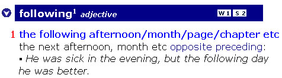

This dictionary is organized on the basis of frequency. The most frequent meanings of a word are shown first, and homographs are shown in frequency order.
All of our judgments about frequency are made by computer-based analysis of all English corpus material available to Longman.
The dictionary also shows which words are used most frequently in spoken and written English. This information appears at the top of the entry toolbar. The example below shows that the word following is among the 1000 most frequent written words and it ranks between 1001 and 2000 on the list of most frequent spoken words.

The 3000 most frequent spoken and written words are indicated in this way:
W1 | Most frequent 1000 written words |
W2 | Between 1001 and 2000 most frequent written words |
W3 | Between 2001 and 3000 most frequent written words |
S1 | Most frequent 1000 spoken words |
S2 | Between 1001 and 2000 most frequent spoken words |
S3 | Between 2001 and 3000 most frequent spoken words |
You can use the dictionary search function to select words by frequency level.